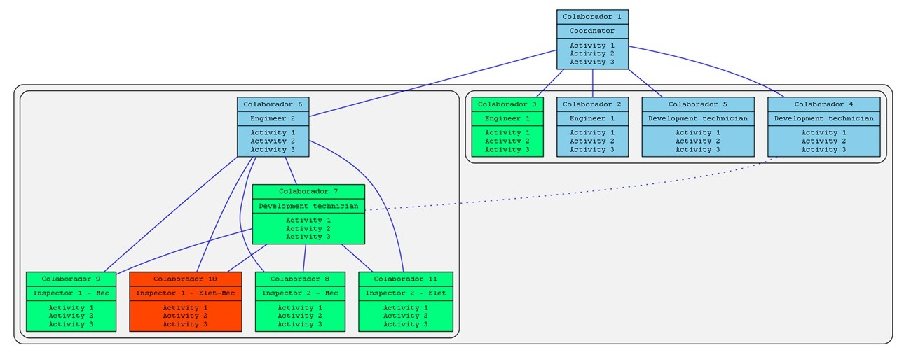
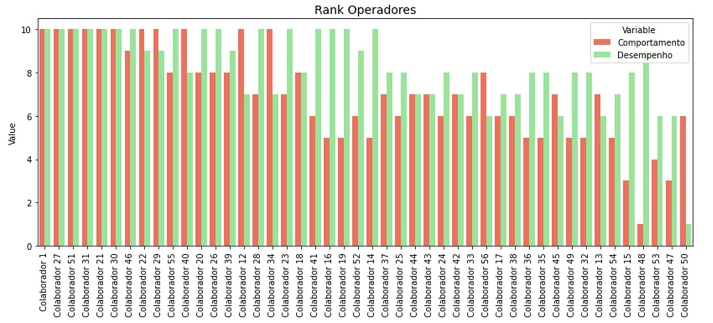

Portifólio
Organograma
Em python foi criado um script que cria o organograma da equipe. Desta forma o trabalho torna mais dinâmico e assertivo. Facilita a comunicação entre a equipe, e as defesas junto ao RH se tornam mais produtivas

Fluxograma
Da mesma forma que o organograma os desenhos de fluxogramas foram automatizados. Com isto os desenhos de fluxos novos são criados mais rapidamente. Tais desenhos são criados durante reunião sem perdas de tempo. O trabalho se torna mais assertivo e colaborativo.
Ranking dos colaboradores
Criei um acompanhamento individual de cada colaborador da operação. Foi traçado metas individuais e possiveis de se atingir. De acordo com os resultados obtidos uma pontuação de "desempenho" foi definida para cada colaborador
Assim como a metrica de "desempenho", também inseri uma pontuação de "comportamento", no qual foram realizados análises qualitativas para cada colaborador

Análises
Analises como o exemplo abaixo acontecem frequentemente para tomadas de decições assertivas e pautadas em dados reais
Acompanhamento de registo pondo do colaborador
Para a equipe operacional foi criado um cockpit com informações de entrada e saida do colaborador e as abstenções ao longo do ultimo ano
O beneficio deste acompanhamento é que pautado em algura alteração da dinamica do colaborador é possivel antecipar ou até mesmo atuar para reverter situações de desmotivação
Timeline
Automatizei a geração de timelines. Em muitas situações é necessário descrever ou planejar ao longo do tempo alguma situação. Esta ferramenta ajuda a diminuir o tempo desprendido nestas tarefas.